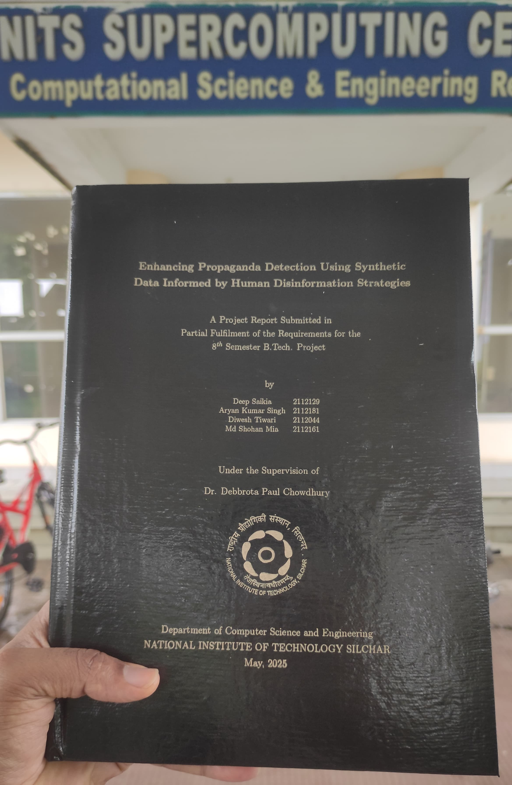
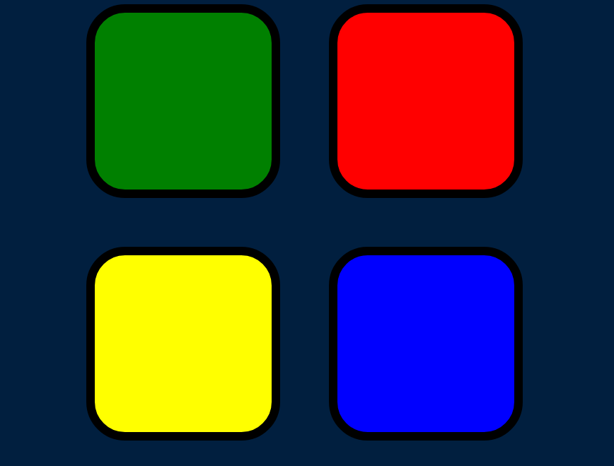
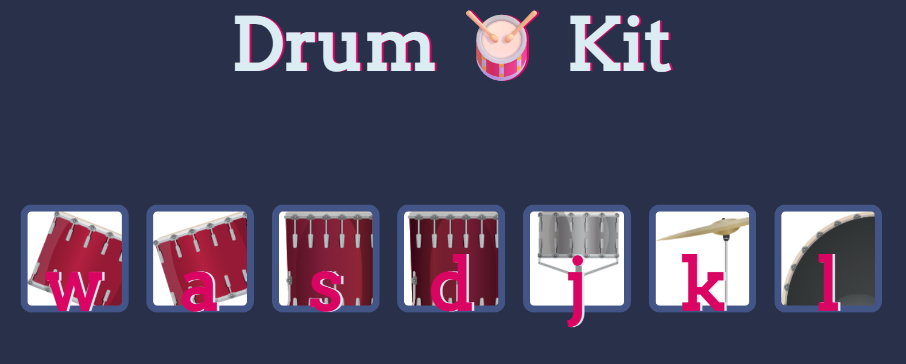

My Projects
My Research
 • I am enthusiast about AI and ML. I have worked some projects on ML and AI
• Topic: ML, AI and DL
Simon Game
 • Simon is a timeless game that offers a fun and engaging way to test and improve your memory skills. Whether you're looking to challenge yourself or compete with friends, Simon provides endless entertainment with its simple yet addictive gameplay.
• Technologies Used: HTML, CSS, JavaScript
Play Game
Learn more...
Virtual Cricket

• Extensively used C++ classes for real-world entities like Player, Team, and Game.
• Implemented game dynamics using member functions and inter-object interactions.
• Utilized C++ standard libraries for functionalities like random number generation, input
validation, and data
management.
Drum Kit
click here The Drum Kit web application is a fun and interactive project that allows users to play virtual drum sounds using both mouse clicks and keyboard inputs. The project provides an engaging and visually appealing user interface, creating a virtual drum set that responds to user actions.
learn more...Copyright © www.muhibshohan.com | All rights reserved